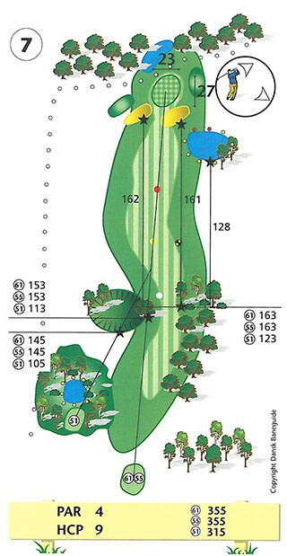

<div class="pages">
  <div data-page="hul7" class="page navbar-fixed toolbar-fixed" >
    <div class="navbar">
      <div class="navbar-inner">
        <div class="left">
          <a href="#" class="link back icon-only"><i class="icon icon-back"></i></a>
          <!-- <a href="#" class="back link icon-only"><i class="icon icon-back"></i></a> -->
        </div>
        <div class="center">Hul 7</div>
        <!-- <div class="right"></div> -->
        <div class="right">
        </div>
      </div>
    </div>
    <div class="page-content" style="padding-top:45px;">
       <div class="content-block">
          <center></center>
          <p>Du har nu spillet de første seks, meget varierede huller og har forhåbentlig fået godt med point, for nu er du nået til Perlerækken. Fem par 4 huller på rad, hvor koncentrationen skal være i top, hvis dit scorekort stadig skal kunne bruges til noget.</p>
          <center></center>
          <p>Perlerækken begynder med 7. hul, hvor udslaget er første udfordring. Tee-stedet er placeret på områdets højeste punkt, hvorfra udsigten er storslået i alle retninger. Udslaget skal være præcist. I venstre side truer træer, en stor fordybning og out of bounds. I højre står en gruppe træer, som vil være stærkt chikanerende for dit andetslag, hvis du havner i eller bag dem.</p>
          <p>Indspillet er også udfordrende med bunkere til venstre og foran green, en stor vand hazard i højre side af fairway samt out of bounds kun 3 meter bag green.</p>
          <p>En stor green som praktisk taget ikke hælder i nogen retning, gør det heller ikke nemmere at få bolden til at blive på green.</p>
          <p>For lav-handicapperen er et langt drive med draw perfekt og vil give mulighed for et højt, præcist indspil til pinden. Pas på out of bounds bag green i medvind.</p>
          <p>Hulsponsor: <br />
          -LEDIGT-<br /><br />
          Bænksponsor:<br />
          
          </p>
        </div>
    </div>
    </div>
    </div>
  </div>
</div>
